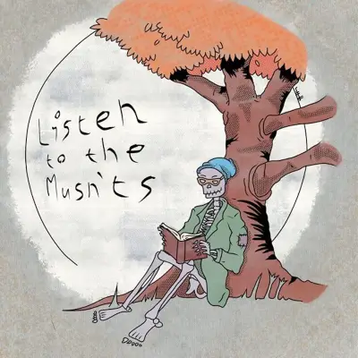
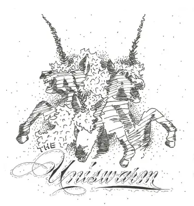
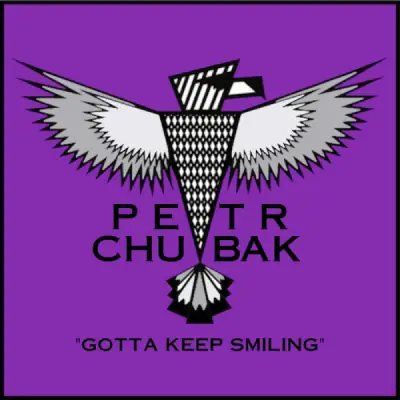
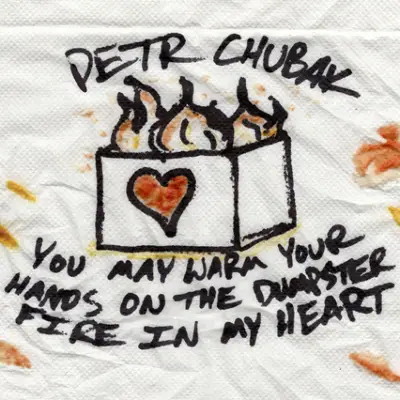

Albums:

2012 | The Uniswarm | spotify
One bird on my finger and one nibbling on my toes
While I'm laying in my bed counting the wolves inside sheep clothes
Staying up late is a habit that I will never outgrow
Because that's when I like to think about what I'll be when I'm old
I want to be that guy in town that everybody knows for singing what's on his mind
But what's on my mind can seem so dull I want to throw it away
Until I take a step back and realize that everything's okay
I need to remember that all things have to sides
Don't throw it out till I've tried to look deeper than what's on the outside
All things that are visible to the naked eye are pretty
But more beautiful is what they all hold inside
Don't forget to look inside, you might be throwing away a diamond
The bird on my finger has now walked onto my nose
And the bird on my toe's shaking reminding me I am cold
Just a few more hours of thinking time before I should fall asleep
And I'll put down my mental papers and I'll do my best to dream
About something so extraordinary, but also something plain
Like the way the city looks from the mountains after it rains
Have you ever seen the city from the mountains after it rains?
If not you've thrown away a diamond, and you should never throw away a diamond
Sometimes I forget to look inside
I've thrown away so many precious times that at night I want to cry
About anything and everything that comes into my mind
That's just the way my body works because my memories were never quite so kind
I asked the birds on my body if they both have worst fears too
Of course they didn't answer but I'm sure that they both do
It's just a thing of nature to want to go and hide
But it's a thing of beauty to come back and face the fright
But sometimes I don't come back to face the fright
I've run and hid from so many precious times that at night I want to cry
About anything and everything that comes into my mind
That's just the way my body works because my memories were never quite so kind
I guess that's enough thinking time, now I'll go lay down my head
And face my inner demons that come at me in my bed
I'll think about the city and how it looks after it rains
Nothing can scare with that happy thought inside my brain
Because happy thoughts can bring back lost diamonds
And you should never throw away a diamond
I'm sorry I did what I did Your presence just took me by surprise I don't like arachnids in my bed And you were staring at me with at least six eyes Now you're swimming in the sewer Evidence of my murderous intent And I'm the obvious wrongdoer For committing a relentless act of torment On a creature who didn't know My bed was a spider-free zone
The past few years I have made friends from all across America But it doesn't stop there, it goes out as far as India Pen pals have been my life but now it's time for me to stay here back at my home With the friends I made back in the ninth grade who first introduced me to punk shows I'll never forget seeing Trebuchet for the first time at the Boing! Collective Just as clear as that year I saw Pink Houses in a Bloomington basement So many places it's getting hard for me to recognize the faces But I still love all of them no matter how bad my memory gets And my friends are scattering again like dandelions blowing in the wind And I hope that we're not being fooled as we fly whichever way that we're pulled As much as I love traveling I'm now broke and stuck in West Valley And at the rate I'm going it will be months before I'm ready to be leaving But when I do you can be sure the places I'll be going Are to visit all my lost friends that have been scattered across the country The best part is no matter where I am I know how to find the music It's just not worth living anywhere the people don't speak that music language Holding hands when it gets cold at crowded basement shows But what I miss most of all was laying in the graveyard watching stars fall And my friends are scattering again like dandelions blowing in the wind And I hope that we're not being fooled as we fly whichever way that we're pulled
With string I've tied to a group of birds I'm off of this planet for an eternity
The rose just doesn't smell like it did after so many years living in solitairy
So I'm into space to find another place
I don't want to live here again without another friend
On my journeys I found a man on his own tiny world
He was a big and wealthy king with his big ermine cloak unfurled
He said I was his subject. I object! I won't be a part of it
Your kingdom is what your eyes can see
And only what your ears can hear, watch me disappear
Soon I met another man upon Asteroid 326
For knowledge's sake I tried to land just to learn the man was way too conceited
He taught me to clap and admire another for all the wrong reasons
Because he said that he was better than me
What he doesn't know are all the places that I soon will be
Again into space to find another place
I don't want to go home again without finding a friend
In short I met many men but in the end they were exactly the same
Toppler, Explorer, Worker, Counter, King - alike with different names
Nothing left of any imagination
I had yet to find a person that remembered what it meant to be young
When I had all but given up I found hope again in the form of a child
An abandoned pilot surrounded by desert on all sides for miles
I told him we could be adventurous acquaintances
Won't you be my traveler? And I will be your little prince
Bike rides on late nights or is it late nights on bike rides across this whole town? Just to see a show.
We're dancing to the music or is the music playing along to our dancy moves? We know where to go.
Downtown at this house any type of show everybody knows how to get down.
Every show has people that refuse to use their feet and every one of those people becomes a target to me.
There's nothing like the feeling you get moving to the beat or the rush you get when Skyler nearly kicks you in the teeth.
It's a million times funner when everybody sings along, it helps you forget for one night all the things that have gone wrong,
but don't forget to look out for Skyler during each song. You end up with a headache as soon as you assume he's gone.
Bike rides on late nights or is it late nights on bike rides across this whole town? Just to see a show.
We're dancing to the music or is the music playing along to our dancy moves? We know where to go.
Downtown at this house any type of show everybody knows how to get down. And if we're lucky we just may get back up.
All that I can see is darkness
My torn clothes are stained with my own blood
Death's touched everything around us
But the dead aren't dead for long and they're starting to come
From down the hall I hear the horde setting in
A jarring symphony of moans and growls
I think back on what a good life it's been
And before I know it I'm down on the ground
I can feel their teeth biting into my body
But only until my brain loses its connectivity
Everything goes black and I cease to be me
When my corpse reanimates it's just another zombie
Good old Salt Lake City don't you dare forget me when I'm gone
And wonderful West Valley you've got the sweetest memories
I'm so sorry but I'm moving on
This time it's not just Sugar House or downtown
This time I'll do my best not to stick around anymore
My friends are waiting on the eastern shore
Beneath the streetlights is a feeling that I lost so long ago
Walking under the night sky through places that I used to know
And although the field that I used to sleep in
Is harder than the sand on these east coast beaches
I'd give anything to sleep there again
And forget this lonely town of Weymouth, Massachusetts
Good old Salt Lake City I'm sorry that I scared you like I did
And as for you West Valley it appears I'm not done with you yet
I promise I'm not off to Massachusetts just now
The east shore has got nothing on this disgusting town anymore
I think I found what I've been looking for
In good old Salt Lake City
I swore the music never lied
But it didn't do its best to tell the truth that night
Each chord played was like a shock to the chest
And each lyric sung was enough to do the rest
How insincere this lack of honesty in our music scene is
It never ends
If you want someone to go to your shows
Then go to someone else's, that's just how it goes
I can spread rumors around too
Saying everyone's mistakes or who had sex with who
But I go to shows to sing and dance
And not to get into another person's pants
I've seen the outcome
So I really don't care whose side you are on
Shut your mouth up
If you expect things to be alright
Do your share and stop trying to fight
I remember going to my first show
The people were cooler than Utah's snow
The music played was the highlight of the night
No one dared disturb the feeling brought to our lives
But in four short years
It went from something to love to something to fear
And that's not okay
Remember why you started going to shows
I go to escape the problems I got at home
But if this is stuff you never do
If it doesn't apply, my hat's off to you
Please keep coming to shows, you make them fun
Without cool cats like you I sure would never come
All I'm saying is
Don't get involved in someone's personal business
And destroy their life
Because I want the music scene to last
I sing sad songs because even singing sad songs makes me happy, and sometimes I think that if I sing enough I will never be sad again. I've come to find comfort between wide ruled blue lines, syncopated alliteration and external rhymes. And how my ballpoint pen can liberate my mind from all the bullshit it seems to find. But sometimes when I try to write a song I can't find the words so I take a breath that's nice and long and let whatever wants to come out to come out. Most times that works just fine, but sometimes all that wants out is AHH…!
When I walk outside I look at the ground I pass by
and imagine I'm a giant with my head way in the sky
on a little world that I built all by myself
where I can be alone until I die
I used to have a friend that would walk along with me
and be another giant in what we called “the long street”
but our world got too crowded and so my friend had to leave
leaving me alone until I die
Sometimes it is hard for me to live all by myself
I often think about when I walked with someone else
and I could feel important for just a little while
and not like an object on the shelf
So I stopped pretending and decided to grow up
I became another adult in this world I'll never love
hoping one day I'll find someone that hates it as much as me
and we could die in each other's company
The day I die will not be a lonely time

2019 | Gotta Keep Smiling | spotify
Well, I guess that I haven't been straight with you
But I don't think that I could be if I tried to
I've been wearing a mask so long that I would not know
What I would look like if I let my real face show
Sometimes I would like to scream in your face
While releasing 10 years of my bottled-up rage
Over work, school, broken love, and problems at home
But it all seems so pointless when I'm left alone
'Cause when I'm alone my fears get in my head
They say, “You're worthless, pathetic. Wear this mask instead.
You're a disgrace to everyone that you call your friends”
But I'll never wear that old mask again.
Because I am clean, I am sober, my emotions are checked
I am happy, I just don't know how to show it
So when you see me at the side of the room
Know I am grateful just to be here with you
I was homeless once
By “once” I mean just 17 days
But I often think about those days and the many fields in which I stayed
Almost every night I moved before it got light
Because the cops knew my face here and I knew theirs
And they said, “Son, you can't be sleeping here”
When said and done I still feel homeless inside
Things just haven't felt right since I can't remember
And I don't understand quite why
Life is heartache followed by sweet moments of regret
And I am not sure which one of those this is yet
Life is struggle followed by moments of missing home
And I don't mean the place we rest our heads
But the place we long for yet we never go
Gotta keep smiling
I don't mean “fake it till you make it” here
I mean “Life really sucks sometimes and a smile helps me to remember”
If we could sell emotion I'd be the king of this whole earth
But what good is feeling symptoms if I don't fight to make them work
Life is anger and I take it out upon myself
When I could use all of that energy to be helping someone else
Life is heartless so I forget that I am not
But I'll do my best to imagine just what I'm capable of
If I used my heart and if I opened up
You've got scars on your body that remind you of your tragedies
Yes, I've got mine, but mine are in mentality
I guess that's what it means now to be alive
And I'd never trade mine even for a complete mind
I know you trace yours to remind yourself it's all behind
I guess that's what it means now to feel alive
And everybody's talking about them good old days
And I guess sometimes I too do the same
But I feel much better now that I've let them go
'Cause my good old days were full of knives and empty bottles
And the good old me was wild and uncontrollable
I know I'm different now, but I feel whole.
I said I wanted it to feel like it used to
When it felt like everything hit at once
But you are not convinced I'm sincere in my belief
It's been years since I've felt that alive
Since the summer of '12 if I remember it right
Time to resurrect myself and end this suffering
Won't let the worst years take the best parts out of me
I've sent my pride sailing off with the wind
I'll be happy when it reaches oblivion
Maybe that's enough time for me to get it right
I've done what any good man would do
I took my blame out back and I shot him through
I'm not saying I'm there yet but destination is in sight
When I come back I'll get it right
I hope the best parts of me haven't changed
I'll give it all I've got to keep it that way
When I come back I'll be a better man
I don't want to feel this way again
I remember when it wasn't dreaming
That you and I were together, we were laughing
At how love always seemed so easy
We were too young, there were lessons we'd be learning
When I was with you I felt nothing could come between us
You were my Helen of Troy and I your Menelaus
But the dye was cast and as time passed
Aphrodite she grew jealous of what we had
Now here I am, alone again and wondering
If this was all just in my head
I know we can't change history
Yet I hope this can lead to more than simply
Being in my head
When I was with you I felt nothing could come between us
You were my Helen of Troy and I your Menelaus
But the dye was cast and as time passed
Aphrodite she grew jealous of what we had
Now here I am, alone again and wondering
If this was all just in my head
You wrote me a letter
You said that you're feeling empty
Or at least that's the best way so far that you've found
To explain the way that you're feeling
I know you've been taking things out on yourself
'Cause old decisions you made have brought you to this place
I see a dandelion growing up through the concrete
And I'm sure that is not where it would like to be
But imagine the strength it took it to break free
You say it's not enough to be a flower in the street
When you look up and see all your friends as great oak trees
But they really love you
And they want to help you
They're not growing so high to make you feel so low
They're trying to show you how to make your own roots grow
Please take my hand, I'm reaching out for you
I know with time you will make it through
You wrote me a letter
You said this time you'll try harder
No guarantee that you'll be here for more than one week
I said friend one week's a good starter
I've been in your place, so broken and afraid
Where I hid from the world when all I needed was an embrace
No, I see a lighthouse steadfast in the billows
Nearly drowning yourself yet you don't say a word
Until everybody else has gotten out of the storm
You say it's not enough to help everyone get out
Because now that they're okay you are alone in the swell
But they really love you
And they want to help you
They're not leaving the waves to make you feel unsafe
But they're marking the path to get you out of harms way
I wrote the first letter this time
I'm not waiting around to get your goodbye
I know life's treating you hard tonight but you've made it through hard times
I did my best to explain to you
That I know how it feels, I've walked in those shoes
I won't promise life gets better with time but I promise you do
I tried to write what you mean to me
But how can words explain these feelings
If you are feeling alone tonight
You can always talk with me
You wrote me a letter
Said you're starting to do better
But sometimes you're still angry that you are still here
But you take that to mean that somehow you still care
You're holding on tight to the things that you've got
It's one day at a time
Yes, things are looking up
I wrote you a letter
We really love you
We want to help you
I did my best to explain to you
That I know how it feels, I've walked in those shoes
I won't promise life gets better with time but I promise you do
I tried to write what you mean to me
But how can words explain these feelings
If you are feeling alone tonight
You can always talk with me
So I wrote you a letter

2020 | You May Warm Your Hands on the Dumpster Fire In My Heart | spotify
I started writing songs because that's what my brother did and ever since I can remember I just wanted to be like him.
Until he stared doing things that made me uncomfortable, like hitchhiking out to Cali and then train hopping back home.
He wrote songs of his adventures and they were inspiring so I recorded them on my phone so they would always be with me.
I lost them when I got mad and through my phone off a cliff. His songs were few of many that I lost when I did this.
When he gave me his guitar I taught myself to play his songs hoping one day at a show he would ask me to play along.
I learned by playing all his songs, as well as Gary, Acro, and James, and after all these years I guess I just wanted to say thanks.
I've been a part of this community since just 14 years old and I still do not know how much value I really hold,
because I seem to place my worth on what I hear you people say but I'm too scared to stick around for the whole show to hear it anyway.
So not many know my real name or who I am when I don't sing. I guess it's my own fault, but it's the truth and it can sting.
Now that you know my system I feel like the data is all flawed, but not as flawed as I am when I think you want me gone.
I have a confession to make and I am being quite sincere when I say when I first came out to shows I thought you were something to fear.
I guess my dad got in my head and knowing him I should know better, but I used to think a punk could never be a Christian debtor.
I feared when you discovered how religious that I was I would be kicked out of the only place I really came to love.
You don't believe the things I do. I don't believe the things you do. But you believe in me and I believe in you.
I'm afraid of confrontation yet I always start the fights. I'm bipolar and sometimes I just can't see what is right.
Things can get real tough sometimes and that's what I try to sing about even if my poor vocabulary makes it hard to pick that out.
I often do songwriting because it feels so therapeutic to let out all these emotions I just don't know what to do with.
And I always do my best to be kind to those I write about unless that someone is myself because I'm not someone that I care about.
I put an inside joke in every song I ever write, but no one ever knows to laugh because I don't let them inside.
Now I am in therapy to work on liking who I am, and I feared that when this started I wouldn't write a song again
because I'd have a healthy outlet for all the things I hate inside. It turns out I can do both now and I'm starting to feel alive.
I must correct myself because I'm sure I'll always want to die, but I can start to see why some people enjoy being alive.
I was asked once why I talk so much about depression. Why, if I want to help people, do I just keep screaming at them?
I swear I have an answer but it's quite hard to explain. I guess it's because I have so many friends with chemically imbalanced brains.
They feel lonely or hopeless, undesired or just scared that they are the only ones with these emotions that randomly seem to flare.
Like they are looking at the world while locked inside a little cage. I just want them to understand that I have often felt the same.
And I have many friends who try their best to understand our pain when we are hurting, but they've never had a problem with our brains.
And because it is so painful when the good friends get it wrong we just stay silent. So I try to explain all that in a song.
And try again, and again, and try again, and then again, because emotions are so difficult to explain to our friends.
But I also write songs about depression, about rage, about social anxieties and suicidal states
because I have to keep reminding myself that being alive is right, and that there are some things and people that make all this worth the fight.
Sometimes when I write a song I get proud of myself until I go to the next show and I listen to someone else.
I think maybe it's best if I quit and never waste my time on all this music and emotion and getting it to rhyme.
I can be that guy who goes to every show but never sings, and every band knows his face well but can't remember his name.
And I can support indie music from the comfort of my room. No one would look at me and say, “Don't you write music too?”
When people notice me I'd rather be my phone thrown off a cliff. I still don't know the difference between a progression and a riff.
I'm just a kid who tells sad stories while holding a guitar. This feels like a dream or a nightmare that went too far.
I also do my best to address some happy thoughts because there are too many bands that only sing sad songs,
or that sing about corruption or oppression or of hate, and I'm sure we can find joyful things through which we can relate.
For example, I have a brother who encouraged me when he gave me his guitar and he told me I could sing
and people would listen because I matter to them. I will always fight the stage fright to feel that love again.
And I had a friend whose talent was far superior say, “I want you on my show because I have a friend who needs to hear you.
You may struggle with guitar and getting your voice the way you want it, but you can show emotion in ways that everyone can feel it.”
I didn't know for a long time if my music had any value, but a friend called me up recently saying, “There's something I should tell you.
You see, I left my house intending this night to be my last. I got out my iPod and put it on full blast and I heard you sing -
no, more than that, because it wasn't in the music - I felt you sing about hope and recovery, and I knew I could still do this.”
My friend is out there somewhere still traveling these states. And I write music because I know somehow somewhere someone will relate.
Have you ever had your eyes opened
So full of excitement in ways you hadn't seen
Since you were just a few years old?
Have you ever
Have you ever seen your bad situation
Up from a new light?
One full of hope
I was ready to give up
I was ready to walk out
I was ready to turn my back upon this
I have learned that we're all the same inside
We all got questions we try to hide
And we all do the best with what we've been given
And I never thought I'd ever wanna see tomorrow
I never thought I'd ever love something today
I never thought I'd ever get over what happened yesterday
But I never thought I'd wanna see tomorrow
Have you ever been humbled
Forced to look at yourself after you have had
All of your pride removed?
Have you ever
Have you ever struggled
Struggled with your confidence
To act brave once you do?
Because I'm still scared to wake up
I'm still afraid to walk out
I'm still scared to go all in with this
But I have learned that we're all the same inside
We all got questions we try to hide
And we all do the best with what we've been given
And I never thought I'd ever wanna see tomorrow
I never thought I'd ever love something today
I never thought I'd ever
Get over what happened yesterday
But I never thought I'd wanna see tomorrow
On a nice sunny afternoon like today
I am pleased to announce that I feel as great
As you are looking
It got the best of me as I tried to speak
I looked sheepishly down at my two feet
But now you are speaking and I am hanging on
To every word coming out of your mouth
On a nice sunny afternoon like today
I am pleased to announce that I feel as great
As you are looking
As you are looking
It got the best of me as I tried to speak
I looked sheepishly down at my two feet
But now you are speaking and I am hanging on
To every word coming out of your mouth
Every word coming out of your mouth
This is what happy feels like, we are what happy looks like
I've been chasing this feeling for too much of my life
Just a couple of friends outside trying to outdo each other
This is what happy feels like, we are what happy looks like
Just a couple of kids outside trying to outdo each other
Me and my guitar are crossing the border
Gonna meet up with a couple of friends down by the river
First time out of the States to play my own songs
For people that I've never met
With hours to go is it too early to be nervous?
If I'm a name on a flyer in a rundown venue
I wouldn't have it any other way
If I'm the pennies spent to get you into the show
I hope you get to hear your favorite band play
When the music's over and it's time to go home
I just wanna hear you say
This night was worth it!
Me and my guitar are moving on
After a wonderful guerrilla show on the Saskatchewan
I leave this city broke but full of memories
Of people I won't soon forget
With hours to go before our next stop in Alberta
If I'm a name on a flyer in a rundown venue
I wouldn't have it any other way
If I'm the pennies spent to get you into the show
I hope you get to hear your favorite band play
When the music's over and it's time to go home
I just wanna hear you say
This night was worth it!
Me and my guitar are homeward bound
Gonna meet up with a bunch of kids at The Underground
Canada was great but now I get to play
For all of my inspiring friends
With hours to go is it weird to be this excited?
If I'm a name on a flyer in a rundown venue
I wouldn't have it any other way
If I'm the pennies spent to get you into the show
I hope you get to hear your favorite band play
When the music's over and it's time to go home
I just wanna hear you say
This night was worth it!
I was once a glass window
Framed and adorned with gem
I was still far from perfect
But I used to say I was happy then
But time's a cruel mistress
Left me bare-boned and cracked throughout the whole
Forgot what people saw from a distance
Is not the same thing that lies in my soul
And I let their words change me
And I let their words change me
And I let their words
And I let their words
How I let those words change me
But I'm not contained by a frame on a wall anymore
No, I won't come down to your beck and call
I am up on the rooftops seeing it all
I'm not contained by a frame in a wall anymore
I feel more like a beacon
Shining bright on a hill
And the people come to me this time
Together we will rise up still
We won't let their words change us
We won't let their words change us
We won't let their words
We won't let their words
Only our words can save us
The cold
Shadows and alone
The midnight train vanishes as it goes
Pointing fingers, the sky is falling
Ground is caving in, the conductor's calling
The midnight train vanishes as it goes
The midnight train
I often dreamt of sneaking out, running away
Going anywhere that the conductor couldn't find me
But that train could travel any distance and find me anywhere
I knew it and he knew that I knew it
And that is what gave him power
He craved it until it ran like madness through is veins
Scars run deep
And he left scars deeper than most
Like a nightmare he appears, leaving only pain
And hate wherever he goes
Vanishing until time comes he wishes to strike again
Broken and mentally drained I wait for it to end
But the train keeps moving, the blows keep coming
I try to escape but the conductor keeps shouting
Where do you think you're going when you get out of here?
I can find you anywhere
I keep riding further into the night
My dreams are a bit faded, but they still have light
Like a phantom, I say, we are drifting out of the spotlight
My time is through in this place, I continue
My time is through in this place, I repeat to assure myself
The darkness here now belongs to someone else
I jump to save myself
Pointed fingers, the sky is falling
Ground is caving in, the conductor's calling
But it's too late!
The decision has been made
I'm on the run from the midnight train
Pointing fingers, sky is falling
Caving in, conductor's calling
The Midnight Train
I wake up so angry
There's never a cause
I know people get mad
But I feel the wrath of the gods
Try as I might I just can't let it go
Without taking my pills
Spending hours alone
Alone is the way I wanted to live my life
But recently solitude just doesn't feel right
Since that day we spent in the woods alone
I've been dreaming of a day I would have a hand to hold
Hold on to dear life for all that you've got
When hard times come pray that it is enough
Call me pessimistic, or whatever you want
I call myself a damsel and then I walk on
I call myself Damsel, and then I walk on
I've slept in ditches, in fields, and in cars
Swearing I'd get a house where I'd rest my heart
Turns out living indoors causes me more stress
Because I can't find the money to pay my cheap rent
So I don't feel at home when I'm in my own house
I'm sick of the road so I never go out
Dreams keep getting worse so now I don't sleep
Motivation is gone so I no longer eat
Hold on for dear life to all that you've got
When hard times come pray that it is enough
Call me pessimistic, or whatever you want
I call myself a damsel and then I walk on
I call myself Damsel, and then I walk on
